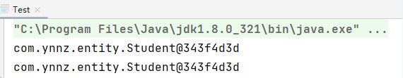

Spring框架
Spring框架一、初始Spring1、Spring概述2、Spring Framework系统架构二、Spring 配置开发1、IoC管理1.1 IoC入门案例1.2 bean基础配置1.3 Bean实例化的方法汇总1.3.1 构造方法创建Bean实例【重点掌握】1.3.2 静态工厂创建Bean实例【了解】1.3.3 动态工厂创建Bean实例【了解】1.4 Bean的生命周期2、DI 管理2.1 set 注入【重点掌握】2.1.1 简单类型注入2.1.2 引用类型注入2.1.3 复杂类型注入2.2 构造方法注入2.3 p 命名空间注入2.4 表达式spel方式注入3、配置方式管理第三方Bean（数据源）3.1 管理第三方数据连接池 c3p03.2 管理第三方数据连接池 druid4、AOP管理4.1 AOP概述4.2 AOP案例三、Spring注解开发1、IoC管理1.1 Bean实例化1.2 依赖注入（DI）管理1.3 第三方Bean管理1.3.1 管理第三方数据源 c3p01.3.2 管理第三方数据源 druid四、JdbcTemplate1、JdbcTemplate 概述2、JdbcTemplate 实例五、Spring事务管理1、Spring事务管理概述2、Spring事务管理案例
一、初始Spring
1、Spring概述
Spring官网：https://spring.io/
Spring目前已经形成了一个开发生态圈，不是一个单一的项目，Spring提供了若干个项目（全家桶），每个项目完成特定的功能。


2、Spring Framework系统架构
Spring Framework是Spring生态圈中最基础的项目，是其他项目的根基。
Spring Framework是一个轻量级的JavaEE企业级开发框架。Spring Framework的核心是依赖注入（DI）、控制反转（IoC）、面向切面编程（AOP）。我们平时所说的Spring框架在狭义上指的就是Spring Framework。
Spring 核心概念：
IoC（Inversion of Control）：控制反转
使用对象时，由主动new产生对象转换为
由外部提供对象。此过程中对象创建的控制权由程序转移到外部，此思想称为控制反转。具体实现：Spring提供了一个IoC容器，用来充当IoC思想中的
“外部”。
Bean：IoC容器负责对象的创建和初始化等工作，被创建或被管理的对象在IoC容器中统称为Bean。
DI（Dependency Injection）：依赖注入
在容器中建立对象与属性、方法的依赖关系，或者建立bean与bean之间依赖关系的整个过程，称为依赖注入。
Spring 的核心目标：
充分解耦
使用IoC容器管理Bean（IoC）
在IoC容器内将有依赖关系的bean进行关系绑定（DI）
高内聚 = 低耦合
二、Spring 配置开发
1、IoC管理
IoC容器主要负责对象的创建和管理。
1.1 IoC入门案例
创建项目
引入资源
方式一：Maven坐标引入
<dependency><groupId>org.springframework</groupId><artifactId>spring-context</artifactId><version>4.2.4.RELEASE</version></dependency>方式二：直接引入 jar 包
创建实体类
Student.javaxpackage com.ynnz.entity;public class Student {private int id;private String name;private double score;public int getId() {return id;}public void setId(int id) {this.id = id;}public String getName() {return name;}public void setName(String name) {this.name = name;}public double getScore() {return score;}public void setScore(double score) {this.score = score;}public String toString() {return "Student{" +"id=" + id +", name='" + name + '\'' +", score=" + score +'}';}}创建Spring核心配置文件
spring.xmlxxxxxxxxxx<beans xmlns="http://www.springframework.org/schema/beans"xmlns:xsi="http://www.w3.org/2001/XMLSchema-instance"xsi:schemaLocation="http://www.springframework.org/schema/beanshttp://www.springframework.org/schema/beans/spring-beans.xsd"><!-- 创建Bean（Student类的对象） --><bean id="student" class="com.ynnz.entity.Student"></bean></beans>测试
xxxxxxxxxxpackage com.ynnz.test;import com.ynnz.entity.Student;import org.springframework.context.ApplicationContext;import org.springframework.context.support.ClassPathXmlApplicationContext;public class Test {public static void main(String[] args) {// 加载上下文路径（加载spring核心配置文件）ApplicationContext context = new ClassPathXmlApplicationContext("applicationContext.xml");// 获取BeanStudent student = (Student) context.getBean("student");// 输出测试System.out.println(student);}}
1.2 bean基础配置
标签的常用属性：
id：bean名称（对象名称）
class：需要创建对象的类路径name：别名配置，名字之间可以使用
逗号、分号、空格连接scope：作用范围配置，作用分为包括：prototype（原型模式）和singleton（单例模式）
prototype：每次请求产生一个Bean实例
singleton：所有请求共享一个Bean实例
别名配置：
xxxxxxxxxx<!-- 创建Bean（Student类的对象） --><bean id="student" name="stu student2" class="com.ynnz.entity.Student"></bean>作用范围配置：
xxxxxxxxxx<!-- 创建Bean（Student类的对象） --><bean id="student" class="com.ynnz.entity.Student" scope="singleton"></bean>xxxxxxxxxxpublic static void main(String[] args) { // 加载上下文路径（加载spring核心配置文件） ApplicationContext context = new ClassPathXmlApplicationContext("spring.xml"); // 获取Bean Student student1 = (Student) context.getBean("student"); Student student2 = (Student) context.getBean("student"); // 输出测试 System.out.println(student1); System.out.println(student2);}
xxxxxxxxxx<!-- 创建Bean（Student类的对象） --><bean id="student" class="com.ynnz.entity.Student" scope="prototype"></bean>xxxxxxxxxxpublic static void main(String[] args) { // 加载上下文路径（加载spring核心配置文件） ApplicationContext context = new ClassPathXmlApplicationContext("spring.xml"); // 获取Bean Student student1 = (Student) context.getBean("student"); Student student2 = (Student) context.getBean("student"); // 输出测试 System.out.println(student1); System.out.println(student2);}1.3 Bean实例化的方法汇总
1.3.1 构造方法创建Bean实例【重点掌握】
1.1 IoC入门案例使用的就是构造方法的方式
1.3.2 静态工厂创建Bean实例【了解】
实体类Student.java
xxxxxxxxxxpackage com.ynnz.entity;public class Student {private int id;private String name;private double score;// set/get方法省略}创建静态工厂类
xxxxxxxxxxpackage com.ynnz.factory;import com.ynnz.entity.Student;public class StudentFactory {// 使用静态方法创建对象public static Student getStu(){return new Student();}}配置静态工厂类到Spring容器中
factory-method：静态工厂中用于创建对象的工厂方法xxxxxxxxxx<bean id="student" class="com.ynnz.factory.StudentFactory" factory-method="getStu"></bean>测试
xxxxxxxxxxpackage com.ynnz.test;import com.ynnz.entity.Student;import org.springframework.context.ApplicationContext;import org.springframework.context.support.ClassPathXmlApplicationContext;public class Test {public static void main(String[] args) {// 加载上下文路径（加载spring核心配置文件）ApplicationContext context = new ClassPathXmlApplicationContext("spring.xml");// 获取BeanStudent student = (Student) context.getBean("student");// 输出测试System.out.println(student);}}
1.3.3 动态工厂创建Bean实例【了解】
实体类Student.java
xxxxxxxxxxpackage com.ynnz.entity;public class Student {private int id;private String name;private double score;// set/get方法省略}创建静态工厂类
xxxxxxxxxxpackage com.ynnz.factory;import com.ynnz.entity.Student;public class StudentFactory {// 使用普通方法创建对象public Student getStu(){return new Student();}}配置静态工厂类到Spring容器中
factory-bean：动态工厂Bean名称factory-method：动态工厂中用于创建对象的工厂方法xxxxxxxxxx<!-- 配置动态工厂Bean --><bean id="studentFactory" class="com.ynnz.factory.StudentFactory"></bean><!-- 配置Student类的Bean --><bean id="student" factory-bean="studentFactory" factory-method="getStu"></bean>测试
xxxxxxxxxxpackage com.ynnz.test;import com.ynnz.entity.Student;import org.springframework.context.ApplicationContext;import org.springframework.context.support.ClassPathXmlApplicationContext;public class Test {public static void main(String[] args) {// 加载上下文路径（加载spring核心配置文件）ApplicationContext context = new ClassPathXmlApplicationContext("spring.xml");// 获取BeanStudent student = (Student) context.getBean("student");// 输出测试System.out.println(student);}}
1.4 Bean的生命周期
Bean的生命周期：bean从创建到销毁的整个过程
Bean的生命周期控制：在bean创建后、销毁前做一些事情
【案例演示】
实体类
Student.javaxxxxxxxxxxpackage com.ynnz.entity;public class Student {private int id;private String name;private double score;// get/set方法省略// bean初始化public void stuInit(){System.out.println("bean初始化......");}// bean销毁public void stuDestory(){System.out.println("bean销毁......");}}配置Student对象到Spring中
xxxxxxxxxx<bean id="student" class="com.ynnz.entity.Student"init-method="stuInit" destroy-method="stuDestory"></bean>测试
bean销毁必须要关闭资源才能实现，关闭资源可以使用两种方式：
使用ClassPathXmlApplicationContext类中的
close()方法使用ClassPathXmlApplicationContext类中的
registerShutdownHook()方法（注册关闭钩子）
xxxxxxxxxxpackage com.ynnz.test;import com.ynnz.entity.Student;import org.springframework.context.support.ClassPathXmlApplicationContext;public class Test {public static void main(String[] args) {// 加载上下文路径（加载spring核心配置文件）ClassPathXmlApplicationContext context = new ClassPathXmlApplicationContext("spring.xml");// 获取BeanStudent student = (Student) context.getBean("student");// 输出测试System.out.println(student);context.close();}}
2、DI 管理
DI 是依赖注入，在spring中，依赖注入的方式有很多，主要包括：
set 注入构造方法注入p 命名空间注入
表达式spel方式注入
2.1 set 注入【重点掌握】
2.1.1 简单类型注入
实体类
Student.javaxxxxxxxxxxpackage com.ynnz.entity;public class Student {private int id;private String name;private double score;// set/get省略public String toString() {return "Student{" +"id=" + id +", name='" + name + '\'' +", score=" + score +'}';}}Major.javaxxxxxxxxxxpackage com.ynnz.entity;public class Major {private int id;private String name;// set/get省略public String toString() {return "Major{" +"id=" + id +", name='" + name + '\'' +'}';}}配置文件
applicationContext.xml标签属性说明： name： 属性名value： 属性值
xxxxxxxxxx<beans xmlns="http://www.springframework.org/schema/beans"xmlns:xsi="http://www.w3.org/2001/XMLSchema-instance"xsi:schemaLocation="http://www.springframework.org/schema/beanshttp://www.springframework.org/schema/beans/spring-beans.xsd"><bean id="student" class="com.ynnz.entity.Student"><!-- set注入 --><property name="id" value="1001"></property><property name="name" value="张三"></property><property name="score" value="88.5"></property></bean></beans>
2.1.2 引用类型注入
在 Student 类中引入 Major 类的对象
注入 时，需要使用
ref属性，基本步骤为：
在需要引入对象的实体类中封装被引用类的对象
在核心配置文件中使用 ref 属性绑定对象名
实体类
Student.javaxxxxxxxxxxpackage com.ynnz.entity;public class Student {private int id;private String name;private double score;/*** 引入Major类对象*/private Major major;// set/get方法省略public String toString() {return "Student{" +"id=" + id +", name='" + name + '\'' +", score=" + score +", major=" + major +'}';}}Major.javaxxxxxxxxxxpackage com.ynnz.entity;public class Major {private int id;private String name;// set/get省略public String toString() {return "Major{" +"id=" + id +", name='" + name + '\'' +'}';}}配置文件
applicationContext.xmxxxxxxxxxx<beans xmlns="http://www.springframework.org/schema/beans"xmlns:xsi="http://www.w3.org/2001/XMLSchema-instance"xsi:schemaLocation="http://www.springframework.org/schema/beanshttp://www.springframework.org/schema/beans/spring-beans.xsd"><!-- 创建被引用的Major类的对象 --><bean id="major" class="com.ynnz.entity.Major"></bean><!-- 创建Student类的对象 --><bean id="student" class="com.ynnz.entity.Student"><property name="major" ref="major"></property></bean></beans>
2.1.3 复杂类型注入
复杂类型注入包括：数组注入、集合注入、Properties 注入等。
创建工具类
SpringUtils.javaxxxxxxxxxxpackage com.ynnz.utils;import java.util.List;import java.util.Map;import java.util.Properties;import java.util.Set;public class SpringUtils {private int[] array;private List<String> list;private Set<String> set;private Map<Integer,String> map;private Properties properties;// set/get方法省略public String toString() {return "SpringUtils{" +"\n array=" + Arrays.toString(array) +",\n list=" + list +",\n set=" + set +",\n map=" + map +",\n properties=" + properties +'}';}}配置文件
applicationContext.xmlxxxxxxxxxx<beans xmlns="http://www.springframework.org/schema/beans"xmlns:xsi="http://www.w3.org/2001/XMLSchema-instance"xsi:schemaLocation="http://www.springframework.org/schema/beanshttp://www.springframework.org/schema/beans/spring-beans.xsd"><bean id="springUtils" class="com.ynnz.utils.SpringUtils"><!--数组类型注入--><property name="array"><array><value>1001</value><value>1002</value><value>1003</value></array></property><!--List集合注入--><property name="list"><list><value>中国</value><value>美国</value><value>俄罗斯</value></list></property><!--Set集合注入--><property name="set"><set><value>张三</value><value>李四</value><value>王五</value></set></property><!--Map集合注入--><property name="map"><map><entry key="1001" value="北京大学"></entry><entry key="1002" value="清华大学"></entry><entry key="1003" value="浙江大学"></entry></map></property><!--Properties类型注入--><property name="properties"><props><prop key="driverClass">com.mysql.jdbc.Driver</prop><prop key="url">jdbc:mysql://localhost:3306/student</prop><prop key="user">root</prop><prop key="password">123456</prop></props></property></bean></beans>测试
xxxxxxxxxxpackage com.ynnz.test;import com.ynnz.utils.SpringUtils;import org.springframework.context.ApplicationContext;import org.springframework.context.support.ClassPathXmlApplicationContext;public class Test {public static void main(String[] args) {// 加载上下文路径（加载spring核心配置文件）ApplicationContext context = new ClassPathXmlApplicationContext("spring.xml");// 获取BeanSpringUtils springUtils = (SpringUtils) context.getBean("springUtils");// 输出测试System.out.println(springUtils);}}
2.2 构造方法注入
使用构造方法注入，需要提供无参构造方法和有参构造方法。
实体类
Major.javaxxxxxxxxxxpackage com.ynnz.entity;public class Major {private int id;private String name;// set/get省略public Major(){}public Major(int id, String name) {this.id = id;this.name = name;}public String toString() {return "Major{" +"id=" + id +", name='" + name + '\'' +'}';}}配置文件
applicationContext.xmlxxxxxxxxxx<beans xmlns="http://www.springframework.org/schema/beans"xmlns:xsi="http://www.w3.org/2001/XMLSchema-instance"xsi:schemaLocation="http://www.springframework.org/schema/beanshttp://www.springframework.org/schema/beans/spring-beans.xsd"><bean id="major" class="com.ynnz.entity.Major"><!--构造方法注入--><constructor-arg name="id" value="1001"></constructor-arg><constructor-arg name="name" value="计算机1班"></constructor-arg></bean></beans>
2.3 p 命名空间注入
实体类
Major.javaxxxxxxxxxxpackage com.ynnz.entity;public class Major {private int id;private String name;// set/get省略public String toString() {return "Major{" +"id=" + id +", name='" + name + '\'' +'}';}}配置文件
applicationContext.xml在使用p命名空间注入之前，需要先引入p命名空间的约束：
xxxxxxxxxxxmlns:p="http://www.springframework.org/schema/p"xxxxxxxxxx<beans xmlns="http://www.springframework.org/schema/beans"xmlns:xsi="http://www.w3.org/2001/XMLSchema-instance"xmlns:p="http://www.springframework.org/schema/p"xsi:schemaLocation="http://www.springframework.org/schema/beanshttp://www.springframework.org/schema/beans/spring-beans.xsd"><!--p命名空间注入--><bean id="major" class="com.ynnz.entity.Major" p:id="1001" p:name="计算机1班"></bean></beans>
2.4 表达式spel方式注入
表达式spel方式通过
#{属性值}注入属性
实体类
Major.javaxxxxxxxxxxpackage com.ynnz.entity;public class Major {private int id;private String name;// set/get省略public String toString() {return "Major{" +"id=" + id +", name='" + name + '\'' +'}';}}配置文件
applicationContext.xmlxxxxxxxxxx<beans xmlns="http://www.springframework.org/schema/beans"xmlns:xsi="http://www.w3.org/2001/XMLSchema-instance"xsi:schemaLocation="http://www.springframework.org/schema/beanshttp://www.springframework.org/schema/beans/spring-beans.xsd"><!--表达式spel方式注入--><bean id="major" class="com.ynnz.entity.Major"><property name="id" value="#{1001}"></property><property name="name" value="#{'计算机1班'}"></property></bean></beans>
3、配置方式管理第三方Bean（数据源）
3.1 管理第三方数据连接池 c3p0
引入资源
方式一：Maven 依赖坐标引入
xxxxxxxxxx<dependency><groupId>org.springframework</groupId><artifactId>spring-context</artifactId><version>4.2.4.RELEASE</version></dependency><dependency><groupId>com.mchange.c3p0</groupId><artifactId>com.springsource.com.mchange.v2.c3p0</artifactId><version>0.9.1.2</version></dependency><dependency><groupId>mysql</groupId><artifactId>mysql-connector-java</artifactId><version>5.1.49</version></dependency>方式二：直接引入 jar 包
基础包
jdbc基础包
数据源
配置数据源
spring.xmlxxxxxxxxxx<beans xmlns="http://www.springframework.org/schema/beans"xmlns:xsi="http://www.w3.org/2001/XMLSchema-instance"xsi:schemaLocation="http://www.springframework.org/schema/beanshttp://www.springframework.org/schema/beans/spring-beans.xsd"><!-- 使用c3p0配置数据源 --><bean id="dataSource" class="com.mchange.v2.c3p0.ComboPooledDataSource"><property name="driverClass" value="com.mysql.jdbc.Driver"></property><property name="jdbcUrl" value="jdbc:mysql://localhost:3306/jw"></property><property name="user" value="root"></property><property name="password" value="123456"></property></bean></beans>测试
xxxxxxxxxxpackage com.ynnz.test;import com.mchange.v2.c3p0.ComboPooledDataSource;import org.springframework.context.ApplicationContext;import org.springframework.context.support.ClassPathXmlApplicationContext;public class Test {public static void main(String[] args) {ApplicationContext context = new ClassPathXmlApplicationContext("spring.xml");ComboPooledDataSource dataSource = (ComboPooledDataSource) context.getBean("dataSource");// 打印数据源信息System.out.println(dataSource.getDriverClass());}}
3.2 管理第三方数据连接池 druid
引入资源
方式一：Maven 依赖坐标引入
xxxxxxxxxx<dependency><groupId>org.springframework</groupId><artifactId>spring-context</artifactId><version>4.2.4.RELEASE</version></dependency><dependency><groupId>com.mchange.c3p0</groupId><artifactId>com.springsource.com.mchange.v2.c3p0</artifactId><version>0.9.1.2</version></dependency><dependency><groupId>mysql</groupId><artifactId>mysql-connector-java</artifactId><version>5.1.49</version></dependency>方式二：直接引入 jar 包
基础包
jdbc基础包
数据源
配置数据源
spring.xmlxxxxxxxxxx<beans xmlns="http://www.springframework.org/schema/beans"xmlns:xsi="http://www.w3.org/2001/XMLSchema-instance"xsi:schemaLocation="http://www.springframework.org/schema/beanshttp://www.springframework.org/schema/beans/spring-beans.xsd"><!-- 使用druid配置数据源 --><bean id="dataSource" class="com.alibaba.druid.pool.DruidDataSource"><property name="driverClassName" value="com.mysql.jdbc.Driver"></property><property name="url" value="jdbc:mysql://localhost:3306/jw?characterEncoding=utf-8"></property><property name="username" value="root"></property><property name="password" value="123456"></property></bean></beans>测试
xxxxxxxxxxpackage com.ynnz.test;import com.mchange.v2.c3p0.ComboPooledDataSource;import org.springframework.context.ApplicationContext;import org.springframework.context.support.ClassPathXmlApplicationContext;public class Test {public static void main(String[] args) {ApplicationContext context = new ClassPathXmlApplicationContext("spring.xml");ComboPooledDataSource dataSource = (ComboPooledDataSource) context.getBean("dataSource");// 打印数据源信息System.out.println(dataSource.getDriverClass());}}
4、AOP管理
4.1 AOP概述
AOP（Aspect Oriented Programming），面向切面编程，是一种编程思想。
AOP的作用：在不惊动原始设计的基础上为其进行功能增强。
4.2 AOP案例
引入资源
方式一：Maven 依赖坐标引入
xxxxxxxxxx<dependency><groupId>org.springframework</groupId><artifactId>spring-context</artifactId><version>4.2.4.RELEASE</version></dependency><dependency><groupId>org.springframework</groupId><artifactId>spring-aspects</artifactId><version>4.2.4.RELEASE</version></dependency>方式二：直接引入 jar 包
基础包
AOP（面向切面编程）
创建原始功能业务类
OrderService.javaxxxxxxxxxxpackage com.ynnz.service;public class OrderService {public void insertOrder(){System.out.println("客户新增了1个订单");}}创建新功能业务类
OrderAdvice.javaxxxxxxxxxxpackage com.ynnz.advice;public class OrderAdvice {/*** 订单申请*/public void orderApply(){System.out.println("客户提交了订单申请......");}/*** 关闭订单*/public void closeOrder(){System.out.println("客户关闭了订单......");}}创建spring核心配置文件
applicationContext.xml在配置aop时，需要引入aop约束：
aop配置主要包括两个关键点：
配置切入点：
xxxxxxxxxx<aop:pointcut id="切入点id" expression="execution(返回值类型 原始业务类路径.业务类.方法名(参数))"/>配置切面：
xxxxxxxxxx<!--配置AOP切面--><aop:aspect ref="引用的通知id"><!--前置通知--><aop:before method="新功能业务(方法)" pointcut-ref="切入点id"></aop:before><!--后置通知--><aop:after method="新功能业务(方法)" pointcut-ref="切入点id"></aop:after></aop:aspect>
xxxxxxxxxx<beans xmlns="http://www.springframework.org/schema/beans"xmlns:xsi="http://www.w3.org/2001/XMLSchema-instance"xmlns:aop="http://www.springframework.org/schema/aop"xsi:schemaLocation="http://www.springframework.org/schema/beanshttp://www.springframework.org/schema/beans/spring-beans.xsdhttp://www.springframework.org/schema/aophttp://www.springframework.org/schema/aop/spring-aop.xsd"><!--配置目标对象（原有功能）--><bean id="orderService" class="com.ynnz.service.OrderService"></bean><!--配置通知对象（新功能）--><bean id="orderAdvice" class="com.ynnz.advice.OrderAdvice"></bean><!--AOP配置--><aop:config><!--配置切入点--><aop:pointcut id="pointCut" expression="execution(* com.ynnz.service.OrderService.*(..))"/><!--配置AOP切面--><aop:aspect ref="orderAdvice"><!--前置通知--><aop:before method="orderApply" pointcut-ref="pointCut"></aop:before><!--后置通知--><aop:after method="closeOrder" pointcut-ref="pointCut"></aop:after></aop:aspect></aop:config></beans>测试
xxxxxxxxxxpackage com.ynnz.test;import com.ynnz.service.OrderService;import org.junit.Test;import org.springframework.context.ApplicationContext;import org.springframework.context.support.ClassPathXmlApplicationContext;public class AopTest {public void testOrderService(){ApplicationContext context = new ClassPathXmlApplicationContext("spring.xml");OrderService orderService = (OrderService) context.getBean("orderService");orderService.insertOrder();}}
三、Spring注解开发
1、IoC管理
1.1 Bean实例化
在注解开发中，使用
@Component进行Bean实例化：
默认情况下，@Component 创建的对象名为类名（将类名首字母改为小写）
自定义对象名，使用
@Component(对象名)进行设置
实体类
Student.javaxxxxxxxxxxpackage com.ynnz.entity;public class Student {private int id;private String name;private double score;// set/get方法省略}开启注解包扫描
使用注解开发之前，需要引入 spring-aop
使用注解，需要引入 context 约束：
xxxxxxxxxx<beans xmlns="http://www.springframework.org/schema/beans"xmlns:xsi="http://www.w3.org/2001/XMLSchema-instance"xmlns:context="http://www.springframework.org/schema/context"xsi:schemaLocation="http://www.springframework.org/schema/beanshttp://www.springframework.org/schema/beans/spring-beans.xsdhttp://www.springframework.org/schema/contexthttp://www.springframework.org/schema/context/spring-context.xsd"><!--开启注解包扫描--><context:component-scan base-package="com.ynnz"></context:component-scan></beans>直接在实体类中加入注解创建Bean实例
xxxxxxxxxxpackage com.ynnz.entity;import org.springframework.stereotype.Component;public class Student {private int id;private String name;private double score;// set/get方法省略}测试
xxxxxxxxxxpackage com.ynnz.test;import com.ynnz.entity.Student;import org.springframework.context.ApplicationContext;import org.springframework.context.support.ClassPathXmlApplicationContext;public class Test {public static void main(String[] args) {ApplicationContext context = new ClassPathXmlApplicationContext("applicationContext.xml");Student student = (Student) context.getBean("student");System.out.println(student);}}
1.2 依赖注入（DI）管理
在注解开发中，属性注入主要使用如下注解：
简单类型注入：
@Value(属性值)引用类型注入：
@Autowired，如果需要重定义引用类的对象名，可以使用@Qualifier(对象名)进行设置
实体类
Student.javaxxxxxxxxxxpackage com.ynnz.entity;import org.springframework.beans.factory.annotation.Autowired;import org.springframework.beans.factory.annotation.Qualifier;import org.springframework.beans.factory.annotation.Value;import org.springframework.stereotype.Component;public class Student {private int id;private String name;private double score;/*** 引用Major类对象*/private Major major;// set/get方法省略public String toString() {return "Student{" +"id=" + id +", name='" + name + '\'' +", score=" + score +", major=" + major +'}';}}Major.javaxxxxxxxxxxpackage com.ynnz.entity;import org.springframework.beans.factory.annotation.Value;import org.springframework.stereotype.Component;public class Major {private int id;private String name;// set/get方法省略public String toString() {return "Major{" +"id=" + id +", name='" + name + '\'' +'}';}}开启注解包扫描
xxxxxxxxxx<beans xmlns="http://www.springframework.org/schema/beans"xmlns:xsi="http://www.w3.org/2001/XMLSchema-instance"xmlns:context="http://www.springframework.org/schema/context"xsi:schemaLocation="http://www.springframework.org/schema/beanshttp://www.springframework.org/schema/beans/spring-beans.xsdhttp://www.springframework.org/schema/contexthttp://www.springframework.org/schema/context/spring-context.xsd"><!--开启注解包扫描--><context:component-scan base-package="com.ynnz"></context:component-scan></beans>使用注解管理Bean实例化和依赖注入
Major.javaxxxxxxxxxxpackage com.ynnz.entity;import org.springframework.beans.factory.annotation.Value;import org.springframework.stereotype.Component;("maj")public class Major {("1001")private int id;("计算机1班")private String name;// set/get方法省略public String toString() {return "Major{" +"id=" + id +", name='" + name + '\'' +'}';}}Student.javaxxxxxxxxxxpackage com.ynnz.entity;import org.springframework.beans.factory.annotation.Autowired;import org.springframework.beans.factory.annotation.Qualifier;import org.springframework.beans.factory.annotation.Value;import org.springframework.stereotype.Component;public class Student {("1001")private int id;("张三")private String name;("88.5")private double score;/*** 引用Major类对象*/("maj")private Major major;// set/get方法省略public String toString() {return "Student{" +"id=" + id +", name='" + name + '\'' +", score=" + score +", major=" + major +'}';}}
1.3 第三方Bean管理
1.3.1 管理第三方数据源 c3p0
引入资源
方式一：Maven 依赖坐标引入
xxxxxxxxxx<dependency><groupId>org.springframework</groupId><artifactId>spring-context</artifactId><version>4.2.4.RELEASE</version></dependency><dependency><groupId>com.mchange.c3p0</groupId><artifactId>com.springsource.com.mchange.v2.c3p0</artifactId><version>0.9.1.2</version></dependency><dependency><groupId>mysql</groupId><artifactId>mysql-connector-java</artifactId><version>5.1.49</version></dependency>方式二：直接引入 jar 包
基础包
jdbc基础包
数据源
创建JDBC配置类管理数据源
JdbcConfig.java@Configuration：将类设置为配置类@Bean：将方法内容设置为Beanxxxxxxxxxxpackage com.ynnz.config;import com.mchange.v2.c3p0.ComboPooledDataSource;import org.springframework.context.annotation.Bean;import org.springframework.context.annotation.Configuration;import java.beans.PropertyVetoException;public class JdbcConfig {public ComboPooledDataSource dataSource() throws PropertyVetoException {ComboPooledDataSource dataSource = new ComboPooledDataSource();dataSource.setDriverClass("com.mysql.jdbc.Driver");dataSource.setJdbcUrl("jdbc:mysql://localhost:3306/jw");dataSource.setUser("root");dataSource.setPassword("123456");return dataSource;}}测试
加载注解配置类使用
AnnotationConfigApplicationContextxxxxxxxxxxpackage com.ynnz.test;import com.mchange.v2.c3p0.ComboPooledDataSource;import com.ynnz.config.JdbcConfig;import org.springframework.context.annotation.AnnotationConfigApplicationContext;public class Test {public static void main(String[] args) {AnnotationConfigApplicationContext context = new AnnotationConfigApplicationContext(JdbcConfig.class);ComboPooledDataSource dataSource = context.getBean(ComboPooledDataSource.class);// 打印数据源信息System.out.println(dataSource);}}
1.3.2 管理第三方数据源 druid
引入资源
方式一：Maven 依赖坐标引入
xxxxxxxxxx<dependency><groupId>org.springframework</groupId><artifactId>spring-context</artifactId><version>4.2.4.RELEASE</version></dependency><dependency><groupId>com.mchange.c3p0</groupId><artifactId>com.springsource.com.mchange.v2.c3p0</artifactId><version>0.9.1.2</version></dependency><dependency><groupId>mysql</groupId><artifactId>mysql-connector-java</artifactId><version>5.1.49</version></dependency>方式二：直接引入 jar 包
基础包
jdbc基础包
数据源
创建JDBC配置类管理数据源
JdbcConfig.java@Configuration：将类设置为配置类@Bean：将方法内容设置为Beanxxxxxxxxxxpackage com.ynnz.config;import com.alibaba.druid.pool.DruidDataSource;import org.springframework.context.annotation.Bean;import org.springframework.context.annotation.Configuration;import javax.sql.DataSource;import java.beans.PropertyVetoException;public class JdbcConfig {public DataSource dataSource() throws PropertyVetoException {DruidDataSource dataSource = new DruidDataSource();dataSource.setDriverClassName("com.mysql.jdbc.Driver");dataSource.setUrl("jdbc:mysql://localhost:3306/jw");dataSource.setUsername("root");dataSource.setPassword("123456");return dataSource;}}测试
加载注解配置类使用
AnnotationConfigApplicationContextxxxxxxxxxxpackage com.ynnz.test;import com.ynnz.config.JdbcConfig;import org.springframework.context.annotation.AnnotationConfigApplicationContext;import javax.sql.DataSource;public class Test {public static void main(String[] args) {AnnotationConfigApplicationContext context = new AnnotationConfigApplicationContext(JdbcConfig.class);DataSource dataSource = context.getBean(DataSource.class);// 打印数据源信息System.out.println(dataSource);}}
四、JdbcTemplate
1、JdbcTemplate 概述
JdbcTemplate是Spring提供的针对不同JDBC操作的一套模板。最常使用的方法有：
update：用于执行新增、修改、删除语句
query：用于执行查询语句
2、JdbcTemplate 实例
使用 JdbcTemplate 完成学生信息的新增、修改、删除、操作。
创建数据库
jw创建数据表
student项目准备
创建 Maven 项目
student-system导入资源
方式一：Maven 依赖坐标引入
xxxxxxxxxx<dependency><groupId>org.springframework</groupId><artifactId>spring-context</artifactId><version>4.2.4.RELEASE</version></dependency><dependency><groupId>org.springframework</groupId><artifactId>spring-jdbc</artifactId><version>4.2.4.RELEASE</version></dependency><dependency><groupId>mysql</groupId><artifactId>mysql-connector-java</artifactId><version>5.1.49</version></dependency><dependency><groupId>com.alibaba</groupId><artifactId>druid</artifactId><version>1.2.8</version></dependency><dependency><groupId>junit</groupId><artifactId>junit</artifactId><version>4.3.12</version><scope>test</scope></dependency>直接引入 jar 包
基础包
jdbc基础包
数据源
jdbcTemplate
单元测试
编写核心配置文件
spring.xmlxxxxxxxxxx<beans xmlns="http://www.springframework.org/schema/beans"xmlns:xsi="http://www.w3.org/2001/XMLSchema-instance"xmlns:context="http://www.springframework.org/schema/context"xsi:schemaLocation="http://www.springframework.org/schema/beanshttp://www.springframework.org/schema/beans/spring-beans.xsdhttp://www.springframework.org/schema/contexthttp://www.springframework.org/schema/context/spring-context.xsd"><!--开启注解包扫描--><context:component-scan base-package="com.ynnz"></context:component-scan><!--数据源配置--><bean id="dataSource" class="com.alibaba.druid.pool.DruidDataSource"><property name="driverClassName" value="com.mysql.jdbc.Driver"></property><property name="url" value="jdbc:mysql://localhost:3306/jw?characterEncoding=utf-8&useSSL=false"></property><property name="username" value="root"></property><property name="password" value="123456"></property></bean><!--将数据源与JdbcTemplate绑定--><bean id="jdbcTemplate" class="org.springframework.jdbc.core.JdbcTemplate"><property name="dataSource" ref="dataSource"></property></bean></beans>编写实体类
Student.javaxxxxxxxxxxpackage com.ynnz.entity;public class Student {private int id;private String name;private String sex;private int age;// set/get方法省略public Student() {}public Student(int id, String name, String sex, int age) {this.id = id;this.name = name;this.sex = sex;this.age = age;}public String toString() {return "Student{" +"id=" + id +", name='" + name + '\'' +", sex='" + sex + '\'' +", age=" + age +'}';}}测试
StudentTest.javaxxxxxxxxxxpackage com.ynnz.test;import java.util.List;import org.junit.Test;import org.springframework.context.ApplicationContext;import org.springframework.context.support.ClassPathXmlApplicationContext;import org.springframework.jdbc.core.BeanPropertyRowMapper;import org.springframework.jdbc.core.JdbcTemplate;import com.ynnz.entity.Student;public class StudentTest {public void testInsert(){ApplicationContext context = new ClassPathXmlApplicationContext("spring.xml");JdbcTemplate jdbcTemplate = (JdbcTemplate) context.getBean("jdbcTemplate");// 编写SQL语句String sql = "insert into student values(?,?,?,?)";// 新增操作int count = jdbcTemplate.update(sql, 1111, "张三", "男", 20);if (count>0){System.out.println("新增成功");}else {System.out.println("新增失败");}}public void testUpdate(){ApplicationContext context = new ClassPathXmlApplicationContext("spring.xml");JdbcTemplate jdbcTemplate = (JdbcTemplate) context.getBean("jdbcTemplate");// 编写SQL语句String sql = "update student set name=?,sex=?,age=? where id=?";// 修改操作int count = jdbcTemplate.update(sql, "王五", "女", 22, 1111);if (count>0){System.out.println("修改成功");}else {System.out.println("修改失败");}}public void testDelete(){ApplicationContext context = new ClassPathXmlApplicationContext("spring.xml");JdbcTemplate jdbcTemplate = (JdbcTemplate) context.getBean("jdbcTemplate");// 编写SQL语句String sql = "delete from student where id=?";// 删除操作int count = jdbcTemplate.update(sql, 1111);if (count>0){System.out.println("删除成功");}else {System.out.println("删除失败");}}public void testQuery(){ApplicationContext context = new ClassPathXmlApplicationContext("spring.xml");JdbcTemplate jdbcTemplate = (JdbcTemplate) context.getBean("jdbcTemplate");// 编写SQL语句String sql = "select * from student";// 查询全部操作List<Student> list = jdbcTemplate.query(sql,new BeanPropertyRowMapper<Student>(Student.class));System.out.println(list);}public void testQueryById(){ApplicationContext context = new ClassPathXmlApplicationContext("spring.xml");JdbcTemplate jdbcTemplate = (JdbcTemplate) context.getBean("jdbcTemplate");// 编写SQL语句String sql = "select * from student where id=?";// 条件查询操作List<Student> list = jdbcTemplate.query(sql,new BeanPropertyRowMapper<Student>(Student.class), 1007);System.out.println(list);}}
五、Spring事务管理
1、Spring事务管理概述
事务管理：在数据层保障一系列的数据库操作要么全部成功，要么全部失败。
Spring事务管理：在数据访问层或业务层保障一系列的数据库操作要么全部成功，要么全部失败。
2、Spring事务管理案例
完成
转账功能
创建数据库
jw创建数据表
account项目准备
创建项目
account-system导入资源
方式一：Maven 依赖坐标引入
xxxxxxxxxx<dependency><groupId>org.springframework</groupId><artifactId>spring-context</artifactId><version>4.2.4.RELEASE</version></dependency><dependency><groupId>org.springframework</groupId><artifactId>spring-jdbc</artifactId><version>4.2.4.RELEASE</version></dependency><dependency><groupId>mysql</groupId><artifactId>mysql-connector-java</artifactId><version>5.1.49</version></dependency><dependency><groupId>com.alibaba</groupId><artifactId>druid</artifactId><version>1.2.8</version></dependency><dependency><groupId>junit</groupId><artifactId>junit</artifactId><version>4.3.12</version><scope>test</scope></dependency>直接引入 jar 包
基础包
jdbc基础包
数据源
jdbcTemplate
单元测试
编写核心配置文件
spring.xmlxxxxxxxxxx<beans xmlns="http://www.springframework.org/schema/beans"xmlns:xsi="http://www.w3.org/2001/XMLSchema-instance"xmlns:context="http://www.springframework.org/schema/context"xsi:schemaLocation="http://www.springframework.org/schema/beanshttp://www.springframework.org/schema/beans/spring-beans.xsdhttp://www.springframework.org/schema/contexthttp://www.springframework.org/schema/context/spring-context.xsd"><!--开启注解包扫描--><context:component-scan base-package="com.ynnz"></context:component-scan><!--数据源配置--><bean id="dataSource" class="com.alibaba.druid.pool.DruidDataSource"><property name="driverClassName" value="com.mysql.jdbc.Driver"></property><property name="url" value="jdbc:mysql://localhost:3306/jw?characterEncoding=utf-8&useSSL=false"></property><property name="username" value="root"></property><property name="password" value="123456"></property></bean><!--将数据源与JdbcTemplate绑定--><bean id="jdbcTemplate" class="org.springframework.jdbc.core.JdbcTemplate"><property name="dataSource" ref="dataSource"></property></bean></beans>编写实体类
Account.javaxxxxxxxxxxpackage com.ynnz.entity;public class Account {private int id;private double money;// set/get方法省略}编写数据访问层接口
AccountDao.javaxxxxxxxxxxpackage com.ynnz.dao;public interface AccountDao {// 加钱public abstract void addMoney(int id,double money);// 减钱public abstract void reduceMoney(int id,double money);}编写数据访问层实现类
AccountDaoImpl.javaxxxxxxxxxxpackage com.ynnz.dao.impl;import com.ynnz.dao.AccountDao;import org.springframework.jdbc.core.JdbcTemplate;import org.springframework.stereotype.Component;import javax.annotation.Resource;("accountDao")public class AccountDaoImpl implements AccountDao {(name = "jdbcTemplate")private JdbcTemplate template;public void addMoney(int id, double money) {String sql = "update account set money=money+? where id=?";template.update(sql,money,id);}public void reduceMoney(int id, double money) {String sql = "update account set money=money-? where id=?";template.update(sql,money,id);}}编写业务层接口
AccountService.javaxxxxxxxxxxpackage com.ynnz.service;public interface AccountService {// 转账public abstract void transferMoney(int fromId,int toId,double money);}编写业务层实现类
AccountServiceImpl.javaxxxxxxxxxxpackage com.ynnz.service.impl;import com.ynnz.dao.AccountDao;import com.ynnz.service.AccountService;import org.springframework.stereotype.Component;import javax.annotation.Resource;("accountService")public class AccountServiceImpl implements AccountService {(name = "accountDao")private AccountDao accountDao;public void transferMoney(int fromId, int toId, double money) {accountDao.reduceMoney(fromId,money);accountDao.addMoney(toId,money);}}测试
xxxxxxxxxxpackage com.ynnz.test;import com.ynnz.service.AccountService;import org.junit.jupiter.api.Test;import org.springframework.context.ApplicationContext;import org.springframework.context.support.ClassPathXmlApplicationContext;public class AccountTest {public void testAccount(){ApplicationContext context = new ClassPathXmlApplicationContext("applicationContext.xml");AccountService accountService = (AccountService) context.getBean("accountService");// 进行转账操作accountService.transferMoney(1001,1002,200);}}不出现异常的时候：（1001减少200，1002增加200）
当转账过程中出现异常时：
出现的情况：1001减少200，1002未增加
转账过程中，出现如下两种情况才是正常的：
1001减少，1002增加
1001未减少，1002未增加
需要实现同时成功或同时失败，就需要使用事务管理。
Spring事务管理设置
方式一：配置方式
applicationContext.xmlxxxxxxxxxx<beans xmlns="http://www.springframework.org/schema/beans"xmlns:xsi="http://www.w3.org/2001/XMLSchema-instance"xmlns:context="http://www.springframework.org/schema/context"xmlns:aop="http://www.springframework.org/schema/aop"xmlns:tx="http://www.springframework.org/schema/tx"xsi:schemaLocation="http://www.springframework.org/schema/beanshttp://www.springframework.org/schema/beans/spring-beans.xsdhttp://www.springframework.org/schema/contexthttp://www.springframework.org/schema/context/spring-context.xsdhttp://www.springframework.org/schema/aophttp://www.springframework.org/schema/aop/spring-aop.xsdhttp://www.springframework.org/schema/txhttp://www.springframework.org/schema/tx/spring-tx.xsd"><!--开启注解包扫描--><context:component-scan base-package="com.ynnz"></context:component-scan><!--数据源配置--><bean id="dataSource" class="com.alibaba.druid.pool.DruidDataSource"><property name="driverClassName" value="com.mysql.jdbc.Driver"></property><property name="url" value="jdbc:mysql://localhost:3306/jw?characterEncoding=utf-8&useSSL=false"></property><property name="username" value="root"></property><property name="password" value="123456"></property></bean><!--将数据源与JdbcTemplate绑定--><bean id="jdbcTemplate" class="org.springframework.jdbc.core.JdbcTemplate"><property name="dataSource" ref="dataSource"></property></bean><!-- 事务核心管理器 --><bean id="transactionManager" class="org.springframework.jdbc.datasource.DataSourceTransactionManager"><property name="dataSource" ref="dataSource"></property></bean><!-- 配置事务通知 --><tx:advice transaction-manager="transactionManager" id="txAdvice"><tx:attributes><tx:method name="*Money" isolation="DEFAULT" read-only="false" propagation="REQUIRED"/></tx:attributes></tx:advice><!-- 配置AOP织入 --><aop:config><aop:pointcut expression="execution(* com.ynnz.service.impl.*ServiceImpl.*(..))" id="txPonintCut"/><aop:advisor advice-ref="txAdvice" pointcut-ref="txPonintCut"/></aop:config></beans>方式二：注解方式
修改
applicationContext.xmlxxxxxxxxxx<beans xmlns="http://www.springframework.org/schema/beans"xmlns:xsi="http://www.w3.org/2001/XMLSchema-instance"xmlns:context="http://www.springframework.org/schema/context"xmlns:tx="http://www.springframework.org/schema/tx"xsi:schemaLocation="http://www.springframework.org/schema/beanshttp://www.springframework.org/schema/beans/spring-beans.xsdhttp://www.springframework.org/schema/contexthttp://www.springframework.org/schema/context/spring-context.xsdhttp://www.springframework.org/schema/txhttp://www.springframework.org/schema/tx/spring-tx.xsd"><!--开启注解包扫描--><context:component-scan base-package="com.ynnz"></context:component-scan><!--数据源配置--><bean id="dataSource" class="com.alibaba.druid.pool.DruidDataSource"><property name="driverClassName" value="com.mysql.jdbc.Driver"></property><property name="url" value="jdbc:mysql://localhost:3306/jw?characterEncoding=utf-8&useSSL=false"></property><property name="username" value="root"></property><property name="password" value="123456"></property></bean><!--将数据源与JdbcTemplate绑定--><bean id="jdbcTemplate" class="org.springframework.jdbc.core.JdbcTemplate"><property name="dataSource" ref="dataSource"></property></bean><!-- 事务核心管理器 --><bean id="transactionManager" class="org.springframework.jdbc.datasource.DataSourceTransactionManager"><property name="dataSource" ref="dataSource"></property></bean><!--添加事务注解--><tx:annotation-driven/></beans>加入事务注解
@Transactionalxxxxxxxxxxpackage com.ynnz.service.impl;import com.ynnz.dao.AccountDao;import com.ynnz.service.AccountService;import org.springframework.stereotype.Component;import org.springframework.transaction.annotation.Transactional;import javax.annotation.Resource;("accountService")public class AccountServiceImpl implements AccountService {(name = "accountDao")private AccountDao accountDao;public void transferMoney(int fromId, int toId, double money) {accountDao.reduceMoney(fromId,money);int i = 7/0;accountDao.addMoney(toId,money);}}